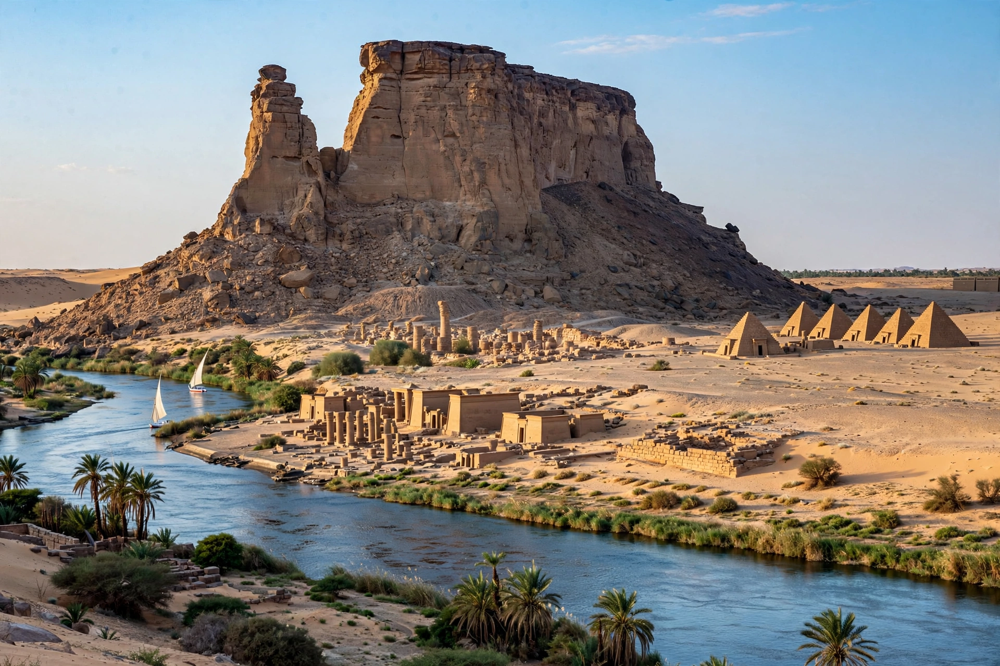

| Napata | |
|---|---|
| Location | Northern State, Sudan |
| Region | Nubia |
| Coordinates | 18.53°N 31.82°E (approx.) |
| Founded | c. 1450 BC (Egyptian outpost) |
| UNESCO | World Heritage Site (2003, with Jebel Barkal) |

Napata (Old Egyptian Npt) was a city of ancient Nubia on the west bank of the Nile at the site of modern Karima, Sudan, at the foot of the sacred mountain Jebel Barkal. Founded by the Egyptian pharaoh Thutmose III around 1450 BC as the southern limit of the Egyptian empire, it later became the capital of the Kingdom of Kush and the royal seat of the kings who conquered Egypt as its Twenty-fifth Dynasty.
Egyptian occupation of Napata lasted until the collapse of the New Kingdom around 1075 BC. By the 8th century BC an independent Kushite kingdom had emerged, centred on Napata and the royal cemetery at el-Kurru. King Kashta extended its power into Upper Egypt, and his son Piye conquered the whole of Egypt around 727 BC. The Kushite pharaohs ruled from Napata and Memphis, and even after the Assyrian invasions drove them from Egypt, Napata remained the religious and political heart of Kush for centuries.
After a raid by the Egyptian king Psamtik II in 593 BC, the royal court gradually shifted south to Meroë, though Napata retained great religious prestige as the home of the great temple of Amun at Jebel Barkal. A Roman expedition under Petronius sacked the city in 23 BC. The site remained inhabited into the Christian era.
The Napatan region includes the temples of Jebel Barkal, the royal cemeteries of el-Kurru and Nuri — where Taharqa built the largest pyramid in Nubia — and the cemetery of Sanam. In 2003 UNESCO inscribed "Gebel Barkal and the Sites of the Napatan Region" as a World Heritage Site.